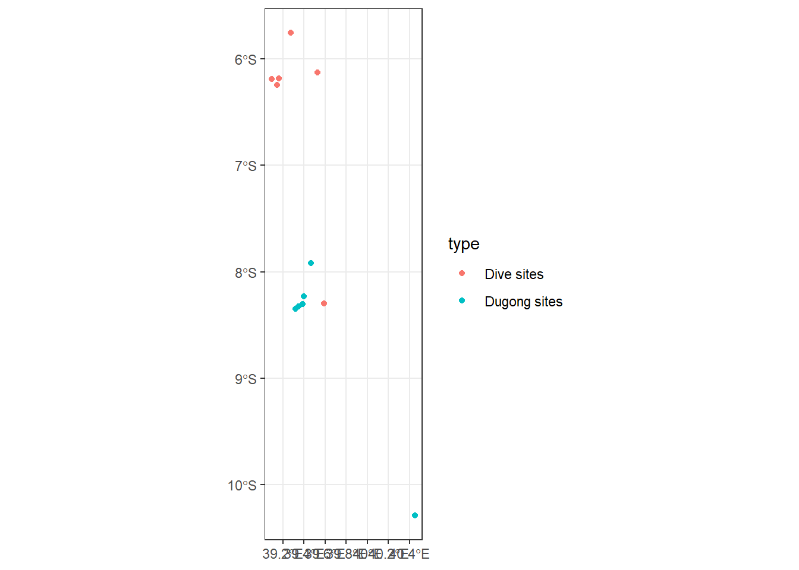

Chapter 10 Working with vector data in R
This tutorial introduces you to different types of spatial data manipulation in R. We’ll learn how to merge shapefiles and clip our data to a vector file, difference between shapefiles, how to get the intersection of point data and line data, and how to create a buffer around a feature. We’ll use R to demonstrate these operations. All of these techniques are very helpful to have in a geospatial analyst’s toolbox. After completing this tutorial, you’ll have hands-on knowledge of the following
- Combining shapefiles
- Clipping points to the boundary of a shapefile
- differences
- Intersection between two vector Łles
- Creating buffers
- Calculating the area of polygons
- Converting vector data types
- Creating statistical summaries of vector files
- Advanced field calculations
Due to the contribution of many developers in the form of R packages, we can now use R as a spatial analysis tool to perform different operations on vector data. To master these, we need to know the basics of spatial data manipulation in R. Some R packages, such as sp, sf, and tidyverse, will be used frequently to accomplish these tasks
10.1 Combining shapefile in R
In this example, we’ll merge two shapefile of two districts called Dhaka and Gazipur. Now, BGD_adm3_data_re is a shapefile containing all of the districts of Bangladesh as separate polygons. We have the shapefile of Dhaka but not of Gazipur, so we’ll create a shapefile of Gazipur before we start merging these two shapefile. Let’s load the required packages now:
Then, we load the `` shapefile. As we have seen in previous chapters
dive.sites = st_read("e:/GIS/Projects/MASTER/tansea/tza_dive_sites_200k.shp", quiet = TRUE)
dive.sitesSimple feature collection with 113 features and 4 fields
geometry type: POINT
dimension: XY
bbox: xmin: 38.98799 ymin: -10.32008 xmax: 40.39575 ymax: -4.88812
geographic CRS: WGS 84
First 10 features:
ID SITEID CLASS NAME geometry
1 1 W1 TYPE1 BAWE NORTH POINT (39.13748 -6.148545)
2 2 W2 TYPE1 BAWE SOUTH POINT (39.13027 -6.161018)
3 3 W3 TYPE1 MPAPE REEF POINT (39.09486 -6.189248)
4 4 W4 TYPE1 MUROGO NORTH POINT (39.12962 -6.184647)
5 5 W5 TYPE1 MUROGO SOUTH POINT (39.12897 -6.19843)
6 6 W6 TYPE4 IN THE WRECK POINT (39.14602 -6.181361)
7 7 W7 TYPE1 FUNGU REEF POINT (39.15258 -6.181359)
8 8 W8 TYPE1 PANGE SANDBANK POINT (39.1611 -6.182669)
9 9 W9 TYPE1 NTANGE WEST POINT (39.11455 -6.239784)
10 10 W10 TYPE1 NYANGE EAST POINT (39.14341 -6.24634)dugong.sites = st_read("e:/GIS/Projects/MASTER/tansea/tza_dugong_sightings_200k.shp", quiet = TRUE)
dugong.sitesSimple feature collection with 6 features and 2 fields
geometry type: POINT
dimension: XY
bbox: xmin: 39.31837 ymin: -10.29022 xmax: 40.45371 ymax: -7.917048
geographic CRS: WGS 84
Name Descr geometry
1 Untitled Placemark <NA> POINT (39.31837 -8.346401)
2 Untitled Placemark <NA> POINT (39.35014 -8.325881)
3 Untitled Placemark <NA> POINT (39.39996 -8.230001)
4 Untitled Placemark <NA> POINT (39.38986 -8.304997)
5 Untitled Placemark <NA> POINT (39.46473 -7.917048)
6 Untitled Placemark <NA> POINT (40.45371 -10.29022)dive.sites = dive.sites %>% select(name = NAME)%>%
mutate(type = "Dive sites") %>%
sample_n(6)
dive.sitesSimple feature collection with 6 features and 2 fields
geometry type: POINT
dimension: XY
bbox: xmin: 39.09486 ymin: -8.298319 xmax: 39.58839 ymax: -5.753368
geographic CRS: WGS 84
name type geometry
1 SNORKEL SPOT 2 Dive sites POINT (39.27631 -5.753368)
2 <NA> Dive sites POINT (39.58839 -8.298319)
3 NYANGE EAST Dive sites POINT (39.14341 -6.24634)
4 HOUSE REEF Dive sites POINT (39.53092 -6.127953)
5 MPAPE REEF Dive sites POINT (39.09486 -6.189248)
6 PANGE SANDBANK Dive sites POINT (39.1611 -6.182669)Simple feature collection with 6 features and 2 fields
geometry type: POINT
dimension: XY
bbox: xmin: 39.31837 ymin: -10.29022 xmax: 40.45371 ymax: -7.917048
geographic CRS: WGS 84
name geometry type
1 Untitled Placemark POINT (39.31837 -8.346401) Dugong sites
2 Untitled Placemark POINT (39.35014 -8.325881) Dugong sites
3 Untitled Placemark POINT (39.39996 -8.230001) Dugong sites
4 Untitled Placemark POINT (39.38986 -8.304997) Dugong sites
5 Untitled Placemark POINT (39.46473 -7.917048) Dugong sites
6 Untitled Placemark POINT (40.45371 -10.29022) Dugong sites
10.2 Clipping in R
Here, we’ll learn how to clip spatial points to a shapefile. For example, we have many data points over many places of Bangladesh and we want to clip these data points to the shapeŁle of Dhaka, named dhaka.shp. In this example, we have a CSV Łle, arbitrary_indicator.csv, which has two columns, lon and lat, containing the longitude and latitude of these points, respectively. To achieve our objective, we can take the following steps. First, read the CSV Łle and then use coordinates() to turn it into a spatial object that R can recognize. In doing so, indicate the longitude and latitude Łelds followed by ~:
10.3 DIfferences in R
Now, what if we only want the points that are outside Dhaka? That’s what the st_difference() function under the sf package in R helps us to do. With st_difference(), we provide points first, followed by dhaka. This is very straightforward to implement:
10.4 Area calculation in R
We can very easily calculate the area of all of the features of a polygon using st_area(). We use this to calculate the area, in square kilometers, of difference districts in Bangladesh. First, we transform the area using st_tranform() to Universal Transverse Mercator (UTM) with units in meters; this will make it easy to have the area in square kilometers. We’ll use the reprojected map of Bangladesh with UTM in st_area() and use an additional argument, byid = TRUE, so that it computes the area for all unique features (in this case, districts). Now, as st_area() returns in square units of whatever unit in which the map was fetched, we’ll get square meters returned by st_area(). So, divide this by 1,000 square to get square kilometers:
10.5 Buffer
Now we’ll learn how to create buffer around a vector file. Using this, we can create a buffer around a point, line, or polygon feature. Suppose we have a shapefile of railways in Dhaka named railway_dhaka.shp. Now, if we want a buffer around this railway, we can use the buŀer feature of the mmqgis plugin. The steps are for doing so are described here:
10.6 Intersection
Intersection gives us back the intersection of two vector Łles. So, if we point vector data and line vector data, the intersection will give all of the point data that intersects with the line data. We will now use food court locations, saved as food_dhaka.shp, and see whether there are any food courts within a 0.5 radius of the railway line in Dhaka (contained in rail_buffer.shp); we interpret this by seeing all of the points where food_dhaka.shp intersects with rail_buffer.shp. We can do so by performing the following steps
10.7 Statistical summary of vector layers
Suppose we have a shapeŁle that has a numeric Łeld and we want to look at a summary of its statistics, including the count, mean, variance, and quantile. This can be very easily done using the Statistics panel of QGIS. We’ll now show the step-by-step process of doing this:
10.8 Summary
We learned how to use different tools in R and QGIS for working with vector data and modifying or creating new data by doing different operations such as merging, clipping, intersecting, creating buffers, and more. We also learned how to use different spatial queries in R. In doing so, we have seen how important it is for two different layers to have the same projection system.
We haven’t touched upon many other tasks, such as using the rgeos package for calculating distance between geometries using st_distance() or using st_union() for taking the union of two shapefiles. With the tools you are equipped with now, you can easily understand other functionalities not covered here and should now be able to perform most of these data manipulation tasks.